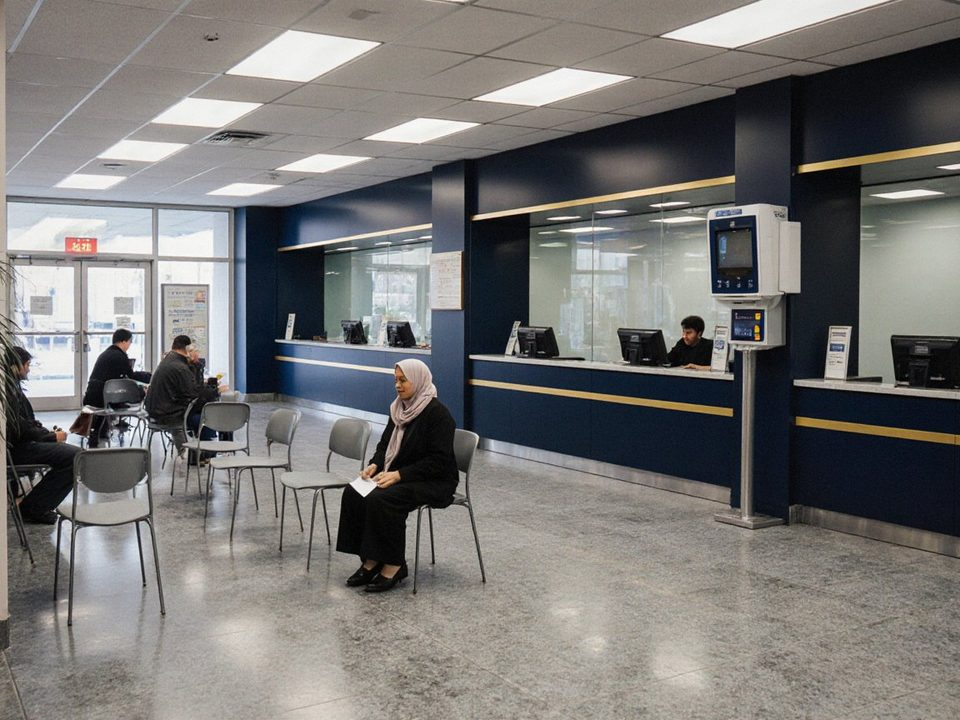

28 branches: 20 in Talas, 6 in Nurzhan and 2 in Iyık Janyl. Western Union transfers are paid at every branch. Each branch has its own pin on Attelkom Maps. Cash machines and their status »

| No. | Branch | Location | Hours | Services | |
|---|---|---|---|---|---|
| — | Head office corporate clients, by appointment | Silk Road Financial Tower, Talas 724000 | Mon–Fri 09:00–18:00 | ATM ×3 | On the map » |
| Talas — 20 branches | |||||
| 01 | Alatau Heights | Alatau Heights, near TSU Stadium | Mon–Fri 09:00–18:00 Sat 10:00–15:00 | WUATM ×3 | On the map » |
| 02 | Old City-1 | Old City, near Attelkom Park | Mon closed Tue–Fri 08:30–12:30, 13:30–17:30 Sat–Sun 09:00–12:30, 13:30–16:30 | WUATM ×2 | On the map » |
| 03 | Old City-2 | Old City, near Bank of Irad head office | Mon–Sun 08:30–17:00 | WUATM ×2 | On the map » |
| 04 | Old City-3 | Old City; 640 m from Bank of Irad head office | Mon–Sun 08:30–12:00, 13:00–16:30 | WUATM ×3 | On the map » |
| 05 | Old City-4 | Old City; 580 m from Church of St. Tomas (Talas) | Mon–Fri 09:00–17:00 Sat 09:00–13:00 | WUATM ×2 | On the map » |
| 06 | Old City-5 | Old City; 460 m from Bank of Irad head office | Mon–Fri 09:00–17:00 Sat 09:00–13:00 | WUATM ×2 | On the map » |
| 07 | Old City-6 | Old City; 500 m from Cathedral of the Resurrection (Talas) | Mon–Fri 09:00–17:00 Sat 09:00–13:00 | WUATM ×2 | On the map » |
| 08 | Pochtamt | Old City; 120 m from Talas Central Post Office | Mon–Sun 10:00–19:00 | WUATM ×3 | On the map » |
| 09 | Printers' Lane | Old City; 80 m from Irad Times, Printers' Lane 3 | Mon–Fri 09:00–18:00 Sat 10:00–15:00 | WUATM ×2 | On the map » |
| 10 | Soviet Centre-1 | Soviet Centre; 320 m from Talas Municipal Gymnasium No. 4 | Mon–Fri 09:00–18:00 Sat–Sun closed | WUATM ×3 | On the map » |
| 11 | Soviet Centre-2 | Soviet Centre; 550 m from Talas Municipal Gymnasium No. 4 | Mon–Fri 09:00–17:00 Sat 09:00–13:00 | WUATM ×2 | On the map » |
| 12 | Soviet Centre-3 | Soviet Centre; 240 m from Talas Municipal Gymnasium No. 4 | Mon–Fri 08:30–16:30 Sat–Sun closed | WUATM ×2 | On the map » |
| 13 | Altyn | Soviet Centre; 240 m from Altyn Tower | Mon–Fri 09:00–18:00 Sat 10:00–15:00 | WUATM ×3 | On the map » |
| 14 | Soviet Centre-4 | Soviet Centre, near Irad State Hippodrome | Mon–Thu 09:00–12:00, 13:00–17:00 Fri 09:00–13:00, 14:30–17:30 Sat–Sun closed | WUATM ×3 | On the map » |
| 15 | Soviet Centre-5 | Soviet Centre, near Talas Municipal Hospital No. 1 | Mon–Thu 09:00–12:00, 12:30–16:30 Fri 09:00–13:15, 14:15–16:30 Sat 09:00–12:00, 12:30–16:30 | WUATM ×2 | On the map » |
| 16 | South-1 | South Talas, near Talas Veterinary Research Center | Mon–Fri 08:30–17:30 Sat–Sun closed | WUATM ×2 | On the map » |
| 17 | South-2 | South Talas, near Talas Veterinary Research Center | Mon–Fri 09:00–17:00 Sat 09:00–13:00 | WUATM ×2 | On the map » |
| 18 | South-3 | South Talas, near TSU Stadium | Mon–Sun 08:30–12:00, 13:00–17:00, 17:30–20:00 | WUATM ×2 | On the map » |
| 19 | East-1 | 400 m from Talas Municipal Hospital No. 1 | Mon–Fri 09:00–16:30 Sat–Sun closed | WUATM ×2 | On the map » |
| 20 | East-2 | East Talas, near Talas Youth Soccer Academy | Mon–Thu 09:00–13:00, 14:00–17:00 Fri 09:00–13:00, 14:30–17:30 Sat 09:00–13:00, 14:00–17:00 | WUATM ×2 | On the map » |
| Nurzhan — 6 branches | |||||
| 21 | Azatlık Pension day on the 10th: electronic queue | Central District; 120 m from Palace of Metallurgists | Mon–Fri 09:00–18:00 Sat–Sun closed | WUATM ×3 | On the map » |
| 22 | Mikrorayon Estates-1 | Mikrorayon Estates; 760 m from Lokomotiv Stadium | Mon–Fri 09:00–18:00 Sat 10:00–15:00 | WUATM ×2 | On the map » |
| 23 | Mikrorayon Estates-2 | Mikrorayon Estates; 620 m from Lokomotiv Stadium | Mon–Fri 09:00–17:00 Sat 09:00–13:00 | WUATM ×3 | On the map » |
| 24 | Mikrorayon Estates-3 | Mikrorayon Estates, near Nurzhan Rail Freight Depot | Mon–Fri 09:00–17:00 Sat 09:00–13:00 | WUATM ×2 | On the map » |
| 25 | Navbahor | Navbahor, near NurGaz Stadium | Mon–Fri 09:00–18:00 Sat 10:00–15:00 | WUATM ×3 | On the map » |
| 26 | NurGaz Worker Housing Complex | NurGaz Worker Housing Complex, near Nurzhan Gas Compressor Station | Mon–Fri 09:00–18:00 Sat 10:00–15:00 | WUATM ×2 | On the map » |
| Iyık Janyl — 2 branches | |||||
| 27 | Cathedral Hill | Cathedral Hill, near Iyık Janyl Monastic Cloister | Mon–Fri 09:00–12:00, 13:00–16:00 Sat 09:00–13:30 | WUATM ×3 | On the map » |
| 28 | Lower Town Opened February 2025 | South-West Iyık Janyl, near Motherhouse of the Order of St. Janyl the Hermit | Mon–Fri 09:00–18:00 Sat 10:00–15:00 | WUATM ×2 | On the map » |
Also: counters of Irad Pochtasy in the districts (pensions, transfers, payments); offices at the main border crossings; mobile banking vans in the villages of the Chu River Basin (timetable at the Talas branches). Telephone of each branch: call the information service, 1993.